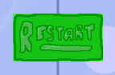

Snowbomb!
Despite being one of my earliest creations during my degree,
Snowbomb turned out to be one of the highest fidelity
projects that I've created to date! It features a start and end
menu, controls, sound effects, a points-system, collision
detection, music and art all created by myself.
I have linked the game onto this page, though it is likely if your
screen is as small as the laptop I'm writing this on, the controls
will likely be a little finnicky (mostly scrolling the page; I'd recommend zooming out if this occurs). If you do play around with it, I
hope you enjoy!
Click me!
If I return to develop Snowbomb further, some of the first
things I would do would be to change the values of many of
the game's objects, as they are set and therefore difficult
to change without ruining the composition of the project.
I would then add animation to the characters to add more life.
Here are a few more screenshots from the game.

